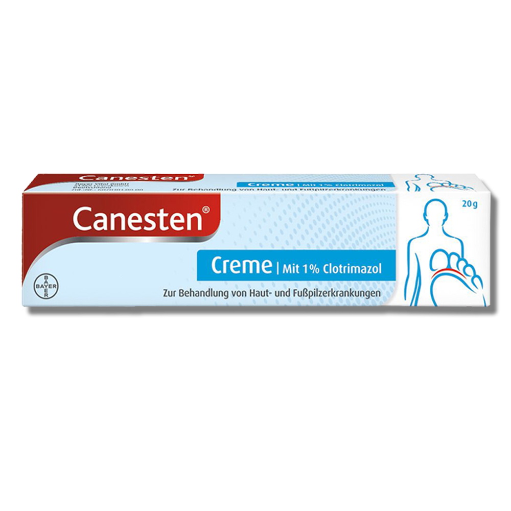

Canesten Creme

Normaler Preis: 8,48€
Aktuelles Angebot: 5,77€
Bei Canesten Extra Creme gegen Haut- und Fußpilzerkrankungen handelt es sich um eine Creme von Bayer Vital.
Im Gegensatz zu vielen anderen Pilzmitteln muss die Canesten Extra Creme nur einmal täglich angewendet werden und zieht zügig in die Haut ein. Sie lindert schnell Symptome wie Juckreiz Rötungen und Brennen.
Canesten Extra Creme gegen Haut- und Fußpilzerkrankungen und Breitbandwirkung gegen alle relevanten Erreger antientzündlicher Zusatzeffekt.
Anwendungshinweise
Bevor Sie die befallenen Hautstellen mit der Canesten Extra Creme behandeln sollten Sie die Bereiche gründlich mit Wasser reinigen und gut abtrocknen. Die beste Wirkung erreichen Sie wenn Sie die schnell einziehende Creme abends vor dem Zubettgehen dünn auf die betroffenen Hautstellen auftragen und kurz einmassieren. Es genügt wenn Sie einmal täglich etwa einen Zentimeter Creme (für etwa eine handtellergroße Fläche) auf die betroffene Stelle auftragen.